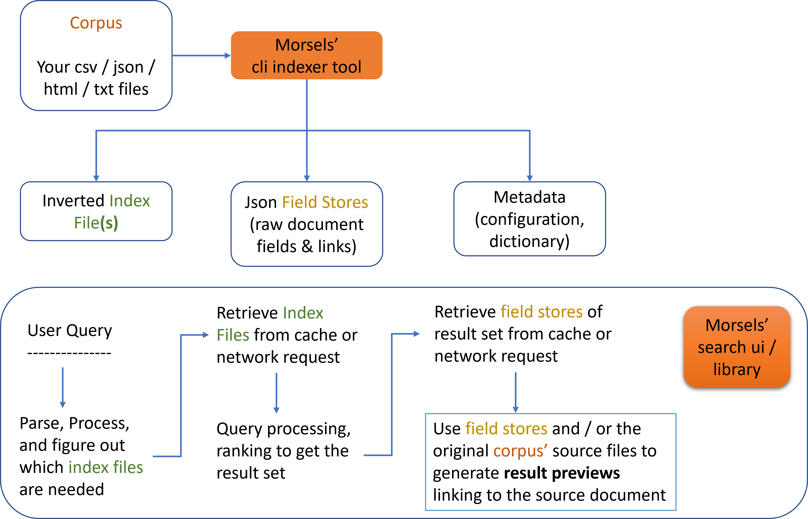

Introduction
Morsels is a complete client-side search solution tailored for static sites, including a search user interface and library that depends on a pre-built index generated by a command-line tool.
Features
-
Multi-threaded 🏇 CLI indexer powered by Rust
-
Typo tolerance ⌨ with spelling correction and automatic prefix search
-
Feature-rich search 🔍: boolean queries, field filters, phrase queries, BM25 scoring, query term proximity boosts, persistent caching and WebWorker built-in
-
Powered by WebAssembly, enabling efficient index (de)compression and query processing
-
Semi-Scalable 📈, achieved by (optionally) splitting the index into chunks (“morsels”).
-
Incremental Indexing
-
Customisable dropdown / fullscreen popup user interface 🖥️
Use Cases
You may want to use this tool if:
- You want a complete solution for static site search
- You have a fairly large collection of HTML, csv, json or txt (only these are supported for now) files that cannot be monolithically retrieved or kept in memory feasibly
- Running a search server / SaaS (eg. Algolia Docsearch) is not an option
⚠️ It is not possible to use morsels for client-side indexing since the indexer is a cli tool.
If this is the use case, consider other lighter-weight libraries like lunr.js that already fit well.
How it Works:

Libraries
This project is currently made up of 1 exposed crate and npm package, which may be referred to in the subsequent sections of the documentation.
Exposed Crates and Packages:
- morsels_indexer: the cli tool providing indexing functionalities for several file formats
- @morsels/search-ui: interfaces with @morsels/search-lib to provide basic search UI functionalities (e.g. result preview generation)
Internal Crates and Packages:
- morsels_search: internal rust wasm crate, used by the @morsels/search-lib package below.
- morsels_common: internal rust crate containing some common functionalities
- @morsels/search-lib: a small companion library to morsels_search for interfacing with the wasm crate. Serves only to separate some concerns from the UI package
- @morsels/lang-XX: internal tokenizer packages for different languages generated by wasm pack
Other Limitations
-
Latency & File Bloat (only when fragmenting the index)
Scaling this tool for larger collections necessitates fragmenting the index and retrieving only what’s needed when searched, which means extra network requests, but to a reasonable degree. (see this demo)
This tool should be able to handle
800MBpure text (not counting things like HTML soup) collections with the full set of features enabled and some configuration tweaking.The degree of fragmentation can be configured to varying degrees. That is, by default, Morsels can, and does function much like other existing monolithic pre-built index options in terms of the number of network requests, and you only “pay for what you need”.
-
Wasm – no IE support =(
-
Not production ready!
-
Browser Focused: For now, the focus is on providing e2e search functionalities in the browser. That means no Node.js support and such.